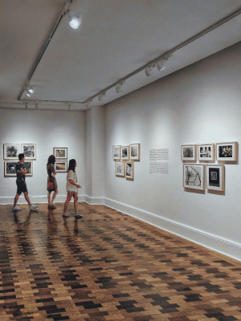

Es un placer para nosotros presentarte la Academia de Artes IMA, un espacio dedicado a nutrir y potenciar el talento artístico en todas sus formas. Nuestra comunidad apasionada y diversa de artistas, músicos, fotógrafos, bailarines, pintores y actores se reúne para explorar y celebrar la creatividad en su máxima expresión. Con sedes en diferentes provincias de Argentina y próximamente en el extranjero, nos enorgullece ser un faro de arte y cultura que trasciende fronteras. ¡Te invitamos a ver la inauguración más reciente de una de nuestras academias en el centro del país, específicamente en Córdoba! Haz clic en el siguiente enlace para ver el video: Inauguración más reciente en Córdoba.
Disciplinas Artísticas en IMA:
Música: Si sueñas con deslumbrar con una sinfonía musical, ofrecemos programas de formación musical que te ayudarán a alcanzar tus metas musicales.
Fotografía: Nuestros cursos de fotografía te permiten capturar momentos mágicos y desarrollar tus habilidades en este emocionante campo.
Danza: Desde baile contemporáneo y clásico hasta aeróbico y tango, nuestras clases de danza te ayudarán a expresarte a través del movimiento.
Pintura: Sumérgete en el mundo de los colores y las texturas en nuestros programas de pintura, donde puedes dar rienda suelta a tu creatividad.
Teatro: Si anhelas deslumbrar en el escenario, nuestros cursos de teatro te ayudarán a desarrollar tus habilidades teatrales y expresivas.
Además de una amplia variedad de disciplinas artísticas, en Academia de Artes IMA ofrecemos:
Carreras de Pregrado y Grado: Si buscas una formación académica sólida en el campo artístico, contamos con carreras de pregrado y grado que te brindarán las bases necesarias para una carrera exitosa en el mundo del arte.
Campus Recreativo: Nuestro campus ofrece un espacio para actividades recreativas en tus horas libres, permitiéndote relajarte y fomentar la creatividad.
Buffet:Disfruta de un lugar acogedor donde puedes satisfacer tus necesidades gastronómicas mientras te sumerges en la inspiración artística.
Biblioteca: Nuestra biblioteca cuenta con una amplia colección de material de estudio para enriquecer tu formación.
Talleres de Ayuda: Ofrecemos talleres y apoyo adicional para nuestros estudiantes, asegurándonos de que tengan acceso a recursos y orientación.
En la Academia de Artes IMA, creemos que el arte es un puente que conecta culturas y personas de todo el mundo. Estamos emocionados por nuestra próxima expansión internacional, que permitirá que más personas se unan a nuestra comunidad global de artistas y creativos.
Nuestra misión es fomentar el arte en todas sus manifestaciones y brindar un ambiente enriquecedor para que nuestros estudiantes, independientemente de su edad o nivel de experiencia, exploren su creatividad, desarrollen sus habilidades y se conviertan en artistas consumados.
Te invitamos a explorar nuestro sitio web y descubrir las oportunidades que Academia de Artes IMA tiene para ofrecerte. Siéntete libre de ponerte en contacto con nosotros para obtener más información sobre nuestras sedes, programas de formación, eventos especiales y cómo puedes unirte a nuestra comunidad artística.
¡Estamos emocionados de ser parte de tu viaje artístico! Únete a Academia de Artes IMA y descubre el arte en su máxima expresión
.¡Inspira, crea y trasciende con nosotros!
¡Te invitamos a unirte a la vibrante comunidad de Academia de Artes IMA siguiéndonos en nuestras redes sociales! Mantente al tanto de las últimas noticias, eventos, y las creaciones artísticas de nuestros talentosos estudiantes y profesores. Síguenos en Facebook, Instagram y Twitter para no perderte ninguna actualización emocionante. Estamos ansiosos por conectarnos contigo y compartir nuestro amor por el arte. Únete a nosotros en nuestras redes sociales y sé parte de nuestra comunidad artística global.
fotos
Te presentamos un recurso exclusivo para la capital de Argentina y sus alrededores: se trata de la Agenda Cultural de Buenos Aires. Este sitio web fue creado para ofrecerte una amplia gama de eventos culturales. Podrás encontrar fácilmente actividades cercanas a tu hogar gracias a su filtro de búsqueda por ubicación. Además, cuenta con opciones para filtrar por fecha, horario y costo, permitiéndote explorar eventos gratuitos o con costo. ¡Descubre y disfruta de la rica oferta cultural que esta increíble ciudad tiene para ofrecer!